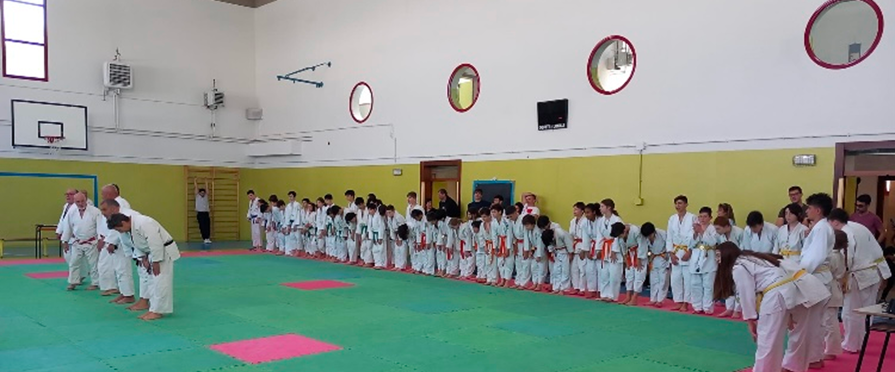
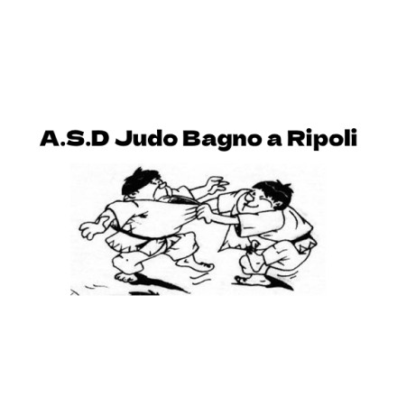
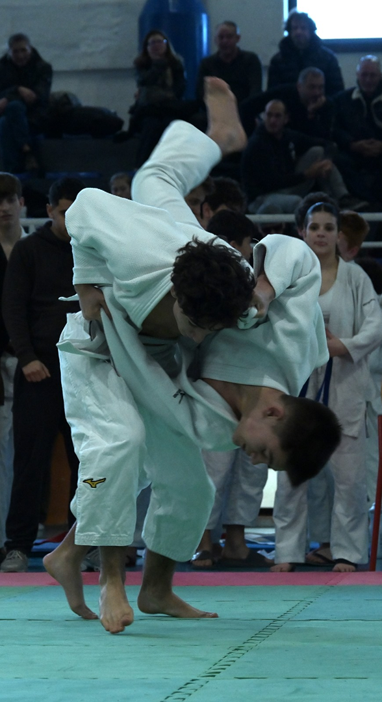

A.S.D. - JUDO BAGNO A RIPOLI
Intraprendi la via della consapevolezza

Passione oltre il Tatami
Nata nel 1975 l’A.S.D Judo Bagno a Ripoli insegna da ormai 50 anni i valori del rispetto e della mutua collaborazione, tramite una delle discipline orientali più nobili al mondo. I nostri maestri provvedono a far apprendere a grandi e piccoli l’arte del Judo in maniera divertente e sicura, mantenendo la tradizionalità caratteristica di un Dojo.
I nostri corsi, aperti anche ai bambini a partire dai 6 anni per il corso piccoli e 13 per il corso grandi, vengono svolti all’interno della scuola Francesco Granacci di Bagno a Ripoli, sotto la supervisione dei maestri Gianni, André e Claudia, insieme ad i nostri atleti più grandi.